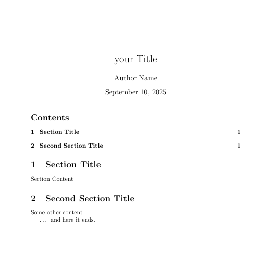
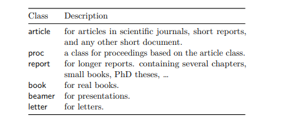
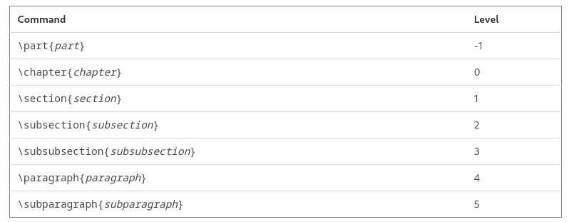

If you’re a student , I am assuming that you’re using latex to write your reports so in this page we going to guide you to effectively manipulate and write in latex smoothly to quickly start your documenting journey
This is more of a conceptual cheatsheet : where we introduce a concept in LaTex and some basic examples of it , anything syntax specific you can find in cheatsheets and documenation anywhere or you can generate it using AI or something.
what is important that you have LaTex organised in your mind to can manipulate existent template or make your own.
here is a very quick and good cheatsheet that you can follow along with this content Latexsheet I’ll re-reference this cheatsheet when needed , so no redundancy and the book that I couldn’t stop referencing The Not So Short Introduction to LATEX
sooo let’s start ,
Choose whatever tool you want but make sure you configure it right!
Info
- overleaf is a personal recommendation to get started quicky but its cloud-based.
- If you want a more granular control and privacy , I recommend using TexStudio or just your preferred Text editor (Vs code , neovim etc…) and compile manually , even if it required more manual configuration but it’s worth the effort.
Generic syntax of LaTex and Glossary
1. Basic Syntax Principles
1.1 Commands
- A command is a single instruction that tells LaTeX to do something.
- Syntax: Starts with a backslash
\commandname. - Arguments:
- Mandatory arguments: enclosed in
{} - Optional arguments: enclosed in
[]
- Mandatory arguments: enclosed in
Example:
\section{Introduction} % mandatory argument
\documentclass[12pt]{article} % optional + mandatoryScope of commands:
- Commands can either affect only the content they wrap (like
\textbf{}) or declare a change for the current scope (like\bfseries). - If a command is a declaration, it continues to affect everything until the scope ends (end of group, environment, or document).
1.2 Environments
- An environment is a block of content surrounded by
\begin{envname}and\end{envname}. - Everything inside an environment is affected by that environment.
- Environments can also define scopes: local changes inside an environment usually do not affect content outside.
Example:
\begin{itemize}
\item First item
\item Second item
\end{itemize}Scope of environments:
- Any formatting, counters, or other effects inside an environment are limited to that environment, unless explicitly declared globally.
1.3 Comments
- Start a line with
%. - Everything after
%on the same line is ignored by LaTeX. Example:% This is a comment
1.4 Groups and Scopes
- Groups are created with
{ ... }and define a local scope for commands and declarations. - Any formatting, counter changes, or settings inside a group only affect content within that group. Once the group ends, the previous settings are restored.
- Groups , ofc, used also to group items together to be treated as one
Example : Temporary bold text
{\bfseries Bold text only in this group} Normal text here\bfseriesaffects only the text inside the braces{}.- After the group ends, the font returns to normal.
Nested groups
- Inner group
{ ... }overrides the outer group temporarily. - After the inner group ends, the outer group’s formatting resumes.
- After the outer group ends, formatting returns to normal.
Scope takeaway:
- Commands can have local effect (inside a group or environment) or global effect (if no group or explicitly made global).
- Groups and environments are tools to control the scope of commands and formatting.
The Tex primitive
\begingroup … \endgroup can work like {} , it is robust for complex content
1.5 Special Characters
these are the special characters that are Reserved , they may break your code if you don’t handle them properly
# $ % ^ & _ { } ~ \
here is how to effectively write them in latex (respectively)
\# \$ \% \^{} \& \_ \{ \} \~{} \textbackslash{}2. Global document structure
\documentclass[<options>]{<class>}
\usepackage{<package>}
\begin{document}
SOME CONTENT....
\end{document}\documentclass[<options>]{<class>}
\author{Author Name}
\title{your Title}
\begin{document}
\maketitle
\tableofcontents
\section{Section Title} Section Content
\section{Second Section Title } Some other content
\ldots{} and here it ends.
\end{document}Here is the output if we chose <class> to be article

Let’s break this down
2.1 the Document class
class ?
specifies what sort of document you intend to write

**source : The Not So Short Introduction to LATEX : link· **
options ?
the whole [options] is optional they define the general appearance and structure of your document they include :
- Font size →
10pt,11pt,12pt - Paper size →
a4paper,letterpaper,legalpaper - Page layout →
oneside,twoside,landscape - Columns →
onecolumn,twocolumn - Equation formatting →
fleqn(left-align equations),leqno(numbers on left) - etc…
2.2 the preamble
it is the area between \documentclass[<options>]{<class>} and \begin{document} in which we can
- Import packages → Add extra functionality (e.g., graphics, tables, math).
\usepackage{graphicx} % for images
\usepackage{amsmath} % for advanced math- Set options → Adjust global document settings, such as page layout or font.
\setlength{\parindent}{0pt} % remove paragraph indentation
\setlength{\parskip}{1em} % add space between paragraphs- Define macros → Create shortcuts for repeated commands.
\newcommand{\name}[num]{definition}
% - \name : new command name
% - [num] : optional, number of arguments (1-9)
% - definition : what the command does
% - Example:
\newcommand{\R}{\mathbb{R}} % shortcut for the set of real numbers- Redefine existing commands → Modify the behavior of commands already defined by LaTeX or packages.
\renewcommand{\name}[num]{new definition}
% - modifies an already defined command
% - Examples:
\renewcommand{\thesection}{\Roman{section}} % sections numbered with Roman numerals
\renewcommand{\familydefault}{\sfdefault} % change default font to sans-serif2.3 the Document Metadata
you may find this called like this or sometimes it is called topmatter or Title block or whatsoever it usually covers
- Title →
\title{Document Title} - Optional line break:
\title{Document Title\\A Subtitle} - Author →
\author{John Doe} - Multiple authors:
\author{John Doe \and Jane Smith} - With affiliations:
\author{John Doe\thanks{University A} \and Jane Smith\thanks{Institute B}} - Date →
- Today’s date:
\date{\today} - Custom date:
\date{September 10, 2025} - No date:
\date{} - Subtitle / extra info → (requires package like
titling)\subtitle{A Conceptual Cheatsheet for Students}
2.4 the Body
Full documents: always include \begin{document} and \end{document}
so this is your playground where you include what you need to
here is the cheatsheet that I mentioned in the beginning that have basic commands , environments and stuff like that
Latexsheet
we’ll discuss more concepts in body in Filling Up the body section
2.5 Anything that follows
anything written after \end{document} is ignored.
Filling Up the Body
1. \maketitle Command
The \maketitle command renders the title block of your document (title, author, date) based on what you defined in the preamble.
Why not just use regular text?
- Using
\maketitlekeeps things consistent with the document class style. - It automatically formats according to academic or publishing standards.
- It adapts to class changes (e.g., switching from
articletoreportorbook). - It integrates with other structures (e.g.,
\tableofcontentsplaces the title in the right spot).
2. The Abstract
Defined with the abstract environment, used for a short summary.
3. \tableofcontents Command
Generates a table of contents from your sectioning commands.
It updates automatically with correct formatting and page numbers.
4. Sectioning and Numbering
Hierarchy

source linkNumber like a pro
LaTeX automatically numbers sections, figures, tables, and equations.
Numbered vs Unnumbered
% Default: 1, 2, 3...
\section{Introduction}
% Unnumbered section
\section*{Acknowledgements} % No number, doesn’t appear in TOC by default
% Include unnumbered section in TOC
\section*{Acknowledgements}
\addcontentsline{toc}{section}{Acknowledgements}Customize numbering
% Change section numbering style
\renewcommand{\thesection}{\Roman{section}} % I, II, III...
\renewcommand{\thesubsection}{\thesection.\arabic{subsection}} % 1.1, 1.2...
\renewcommand{\thesubsubsection}{\thesubsection.\alph{subsubsection}} % 1.1.a, 1.1.b...
Figures, Tables, and Equations
% Figures and tables include chapter number (if using report/book)
\renewcommand{\thefigure}{\thechapter.\arabic{figure}}
\renewcommand{\thetable}{\thechapter.\arabic{table}}
% Equations
\renewcommand{\theequation}{\thesection.\arabic{equation}}Reset Counters
% Reset manually
\setcounter{figure}{0} % Reset figure counter
\setcounter{table}{0} % Reset table counter
\setcounter{equation}{0} % Reset equation counter
\setcounter{section}{0} % Reset section counter
% Reset automatically per higher-level counter (requires chngcntr package)
\usepackage{chngcntr}
\counterwithin{figure}{chapter} % Figures reset every chapter
\counterwithin{table}{chapter} % Tables reset every chapter
\counterwithin{equation}{chapter} % Equations reset every chapter5. Basic Formatting in LaTeX
| Category | Command / Example | Description |
|---|---|---|
| Text Styles | \textbf{Bold}\textit{Italic}\underline{Underline}\emph{Emphasis} | Bold, italic, underline, emphasis |
| Font Sizes | \tiny, \scriptsize, \footnotesize, \small, \normalsize, \large, \Large, \LARGE, \huge, \Huge | Different font sizes |
| Alignment | \begin{center}...\end{center}\begin{flushleft}...\end{flushleft}\begin{flushright}...\end{flushright} | Center, left, right alignment |
| Lists | \begin{itemize}...\end{itemize}\begin{enumerate}...\end{enumerate} | Bulleted and numbered lists |
| Spacing | \smallskip, \medskip, \bigskip, \vspace{1em} | Vertical spacing |
| Line / Paragraph | \\ or \newline\noindent\par | Line break, remove indentation, new paragraph |
| Local Formatting | {\bfseries Bold only here} | Apply formatting locally within a group |
6. How to Handle Figures
\begin{figure}[<position>!]
\centering
\includegraphics[width=0.5\textwidth]{<filepath>}
\caption{Caption text}
\label{fig:<label>}
\end{figure}Explanation
<position>options:h→ heret→ top of pageb→ bottom of pagep→ page of floats!→ override internal constraints<filepath>→ your image file name (with or without extension)\centering→ centers the figure\caption{}→ adds a caption\label{}→ used with\ref{}to reference the figure in text
List of figures
\listoffigures
LaTeX automatically collects captions from all figures with \caption{}
7. How to Handle Tables
\begin{table}[<position>!]
\centering
\begin{tabular}{|c|c|c|}
\hline
Header1 & Header2 & Header3 \\
\hline
Data1 & Data2 & Data3 \\
\hline
\end{tabular}
\caption{Caption text}
\label{tab:<label>}
\end{table}<position>:hhere,ttop,bbottom,ppage of floats,!override constraints.\centering→ centers the table.\caption{}→ adds a caption.\label{}→ used with\ref{tab:<label>}for referencing.\hline→ horizontal line.{|c|c|c|}→ column alignment:ccenter,lleft,rright;|adds vertical lines.
List of Tables
\listoftables works the same as \listoffigures
8. Referencing
Labeling
\label{<marker>- Place a
\label{}inside a section, figure, table, or equation environment. <marker>is a unique name you choose for referencing. Best Practices Use consistent naming: e.g.,fig:,tab:,sec:prefixes.
Referencing by Number
~\ref{<marker>} % inserts the number of the labeled object
~\pageref{<marker>} % inserts the page number where the object appears~ prevents a line break between text and number.
\hyperref
for basic clickable references, you usually just need to load the hyperref package in your preamble:
\usepackage{hyperref}for a custom link
\hyperref[<marker>]{Text to display}
9. Bibliography
A bibliography is a list of sources (books, articles, websites, etc.) referenced or consulted in your document. It provides proper credit and allows readers to locate the sources.
Key Packages
thebibliography→ manual entriesbiblatex→ modern, flexible, works withbibernatbib→ author-year or numeric citationscite→ compress numeric citationshyperref→ clickable citations in PDF
Notes
- Use
\cite{}to reference entries. - Prefer
biblatex/natbibfor large projects.
Handling Separate Files
Including files in each other
the wikibooks discusses this sparingly , but here is a quick “just enough”
\include vs \input
-
\input{file}: -
Simply inserts the contents of
file.texat the location of the command. -
No extra page breaks.
-
Useful for small snippets or logically splitting sections.
-
Supports nesting: an input file can itself
\inputother files. -
\include{file}: -
Inserts the contents of
file.texand creates its own.auxfile. -
Automatically adds a page break before the included file.
-
Useful for large documents (chapters, appendices).
-
Supports nesting only at one level: included files cannot themselves include other files using
\include. Nested inclusion must use\inputinside the included file. -
\includeonly{file1,file2}: -
Compile only the listed
\includefiles while skipping the rest. -
Speeds up compilation for large projects.
-
.auxfiles of skipped files are still read, so references and numbering stay correct. -
Other libraries / packages for including content:
-
standalone: for including separate LaTeX files, figures, or TikZ pictures as standalone content. -
subfiles: allows each subfile to be compiled independently and as part of the main document, supporting fully nested documents.
How Does LaTeX Put Things Together Later?
- During compilation, LaTeX reads the main file and recursively pulls in
\input/\includefiles. \includecreates separate.auxfiles to track counters, labels, and references per file.- The final output is a single PDF, with all included content assembled according to the order in the main file.
\includeonlylets you skip compilation of certain parts while keeping global references intact.
A recommended Structure
A Recommended Structure
- Keep a main file (
main.tex) that defines the preamble, title, and global settings. - Split chapters or sections into separate files in a
chapters/folder or similar. - Optional: use a
figures/folder for images,tables/for tables,bibliography/for.bibfiles. - Example structure:
project/
│── main.tex
│── chapters/
│ ├── intro.tex
│ ├── chapter1.tex
│ └── chapter2.tex
│── figures/
│── tables/
│── bibliography.bibYou’re good to go!
remember that this is only an introduction , as you practice more and search you can always improve your knowledge base and improve your work By now I guess you have enough to write new documents and manipulate existing ones , intentionally without heavy reliance on LLMs and similar tools.
As you may have noticed, I didn’t cover in this page one of the most widespread usages of LaTex , which is writing mathematical formulae , as it will be covered in a dedicated page.